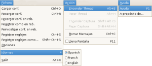
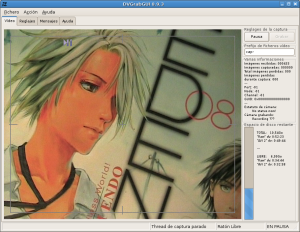
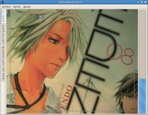
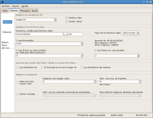
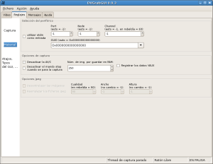
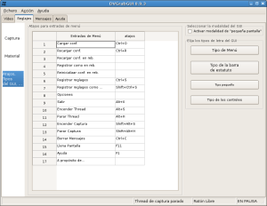

|

Menús… |

Ventana Vídeo… |
|

Pequeña Ventana Vídeo… |

Ventana de Reglajes "Captura"… |
|

Ventana de Reglajes "Material"… |

Ventana de Reglajes "GUI"… |
(c) 2006, 2007, 2008 Bastien Montagne (montagne29 en wanadoo punto fr).
Proyecto albergado en sourceforge.net/projects/dvgrabgui.